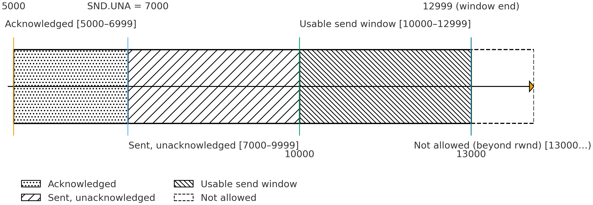

计算机通信与网络 · 作业 · 第 3 章 传输层协议与 HTTP 连接管理
第 3 章 作业 · 传输层协议与 HTTP 连接管理
题目 1传输层协议选型：可靠传输与不可靠传输
题目
假设你是一名网络应用程序开发者，正在为你的新项目选择传输层协议。该项目包含两个核心功能：
- 功能 A：需要向服务器上传一个非常重要的压缩包文件，任何微小的错误（如比特差错、数据丢失）都将导致文件无法使用。
- 功能 B：需要与服务器建立一个实时视频通话功能，要求较高的流畅性，能够容忍微小的数据丢失，但对延迟极其敏感。
已知可供选择的传输层协议主要是 TCP 和 UDP。
- 请简要阐述计算机网络中可靠传输服务和不可靠传输服务的核心区别。这两种服务分别最关注数据传输的哪些方面？
- 从协议机制的角度，说明 TCP 为了实现可靠传输，主要提供了哪三种最核心的机制？（请勿简单罗列首部字段）
- 请为上述项目的功能 A 和功能 B 分别选择合适的传输层协议（TCP 或 UDP）。
- 结合功能 A 的需求，详细论证你为何不选择另一个协议。
- 结合功能 B 的需求，详细论证你为何不选择另一个协议。
- 有一种观点认为「UDP 是简单的、无连接的，因此其性能永远优于 TCP」。请判断这种观点是否正确，并阐述你的理由。
- 既然 UDP 本身不提供可靠传输，为何许多重要的应用（如 DNS、视频会议）依然选择使用它？开发者是如何在 UDP 的基础上解决可靠性问题的？
参考答案
（1）两种传输服务的核心区别
- 可靠传输服务：致力于确保数据能够无差错、不丢失、不重复、且按序地交付给接收方。它最关注数据的正确性和完整性。
- 不可靠传输服务：提供一种「尽力而为」的数据交付，不保证数据一定能到达接收方，也不保证到达的顺序和正确性。它最关注数据传输的效率和低延迟。
（2）TCP 实现可靠传输的三种核心机制
- ① 确认与重传：接收方收到数据后会发送确认报文，发送方在一定时间内未收到确认则认为数据丢失，将重传该数据。
- ② 序列号：为每个数据字节编号，用于接收方按序重组数据，并用于确认机制以指明期望收到的下一个数据。
- ③ 流量控制与拥塞控制：通过滑动窗口等机制，防止发送方发送数据过快导致接收方缓冲区溢出或网络拥塞。
（3）功能 A 与功能 B 的协议选型
功能 A：应选择 TCP。功能 B：应选择 UDP。
（4）功能 A 为何不选择 UDP
功能 A 要求 100% 的数据正确性和完整性。TCP 的确认重传、差错校验和按序交付机制能完美满足此需求。
如果错误地选择 UDP，UDP 不保证可靠交付，文件数据包可能在网络中丢失或损坏，导致接收方无法还原出原始文件，整个传输任务失败。虽然可以在应用层实现可靠性，但这极其复杂且重复造轮子，因此必须选择 TCP。
（5）功能 B 为何不选择 TCP
功能 B 对延迟极其敏感，且能容忍部分数据丢失。视频通话中丢失少量数据包可能仅导致画面短暂模糊或卡顿，但高延迟会导致音画严重不同步，体验极差。
TCP 的重传机制在遇到丢包时，会强制等待并重传，这将引入不确定的、有时很长的延迟（等待超时），严重破坏实时性。而 UDP 没有重传机制，遇到丢包就直接丢弃，继续传输后续的新数据，从而保证了低且稳定的延迟。因此，必须选择 UDP。
（6）「UDP 的性能永远优于 TCP」是否正确
该观点是不正确的。
理由：UDP 的性能优势（低延迟、无连接开销）仅在特定场景（如实时应用、小批量查询）下成立。TCP 通过拥塞控制机制能公平、高效地利用网络带宽，在传输大量数据时（如下载文件）其整体吞吐量和效率远高于 UDP。此外，在不可靠的网络中，TCP 的可靠性保障避免了大量应用层重传，其综合性能可能更好。因此，不能绝对地说 UDP 性能永远优于 TCP。
（7）在 UDP 之上如何解决可靠性问题
- 为何选择 UDP：因为这些应用更看重 UDP 的低延迟、无连接状态、头部开销小等特性。
- 如何解决可靠性：开发者会在应用层根据具体需求，有选择地、轻量级地实现所需的可靠性机制，而不是像 TCP 那样提供全面的、强制的可靠性。
- 例子 1（DNS）：DNS 使用简单的应用层超时重传机制。如果客户端在一定时间内未收到服务器的响应，它会重新发送一次查询请求。
- 例子 2（视频会议）：应用层协议可能会为数据包添加序列号。接收方发现丢包后，可能会请求重传极其关键的数据（如 I 帧），而对于不重要的数据（如 P 帧、B 帧）则直接丢弃，并用纠错编码等技术来弥补，这是一种部分可靠的策略。
题目 2TCP 的序号、确认与发送窗口
题目
主机 A 与主机 B 建立了一条 TCP 连接，用于可靠地传输数据。假设主机 A 要向主机 B 发送一个由 10 个报文段（Segment）组成的数据流，每个报文段包含 1000 字节的数据。已知初始序列号（ISS）为 5000，接收方主机 B 的初始接收窗口为 8000 字节。在传输过程中，忽略拥塞控制的影响。
- 请写出第 1、第 5 和第 10 个报文段的数据所覆盖的字节序列号范围。
- 当主机 B 成功接收并缓存了第 1 至第 3 个报文段，以及第 5 个报文段后（假设第 4 个报文段丢失），它发送出的下一个确认号（ACK）应该是多少？这个确认号的含义是什么？
- 如果主机 B 的应用程序之后读取了 3000 字节的数据，主机 B 的接收窗口会发生什么变化？它如何通过报文告知主机 A 这一变化？
- 主机 A 发送了第 1 个报文段（Seq=5000）。请描述在以下两种情况下，主机 A 的行为：
- ① 该报文段在传输过程中丢失。
- ② 该报文段成功到达主机 B，但主机 B 返回的确认报文（ACK=6000）丢失。
- 以上两种情况的最终结果有何异同？这体现了 TCP 协议的什么特性？
- 在初始状态下，主机 A 的可用发送窗口（Send Window）有多大？
- 假设主机 A 已连续发送了 5 个报文段（Seq=5000, 6000, 7000, 8000, 9000），但只收到了主机 B 对前两个报文段的确认（ACK=7000）。同时，主机 B 在 ACK=7000 的这个报文里通告其接收窗口（rwnd）变为 6000 字节。请画出此时主机 A 的发送窗口示意图，并标出已确认、已发送未确认、可发送、不可发送的数据范围。
- 根据（7）的条件，主机 A 接下来最多还能连续发送多少字节的数据？
- TCP 并非通过在传输前复制多份数据副本来实现可靠传输。请简要阐述 TCP 是如何主要依靠序列号、确认和重传这三个基本机制来共同保障数据可靠传输的。
- 假设一个极其特殊的环境：网络传输非常可靠，几乎从不丢包，但延迟非常高（例如深空通信）。在这种环境下，TCP 的超时重传机制可能会面临什么挑战？能否提出一个简单的优化思路？（提示：从 RTO 的设置角度思考）
参考答案
（1）各报文段覆盖的字节序列号范围
第 1 个报文段：5000 - 5999
第 5 个报文段：5000 + (5-1)*1000 = 9000 -> 9000 - 9999
第 10 个报文段：5000 + (10-1)*1000 = 14000 -> 14000 - 14999
（2）下一个确认号及其含义
TCP 采用累积确认。主机 B 成功接收了第 1、2、3、5 个报文段。由于第 4 个报文段（Seq=8000）丢失，接收方期望收到的下一个字节序列号仍是 8000。因此，它发出的确认号 ACK=8000。这个确认号意味着「8000 之前的所有字节（包括 7000-7999）都已正确接收」。
（3）应用程序读取 3000 字节后接收窗口的变化
接收窗口的前沿（右边界）将向右移动 3000 字节。主机 B 会在后续发送给主机 A 的 TCP 报文段首部中，通过窗口字段（Window Size）通告这个新的、更大的接收窗口值。
（4）两种情况下主机 A 的行为
- ① 报文段丢失：主机 A 启动重传计时器。计时器超时（RTO）后仍未收到 ACK，则判定该报文段丢失，并重传该报文段。
- ② ACK 丢失：主机 A 同样启动重传计时器。计时器超时（RTO）后仍未收到 ACK，则判定该报文段（或 ACK）丢失，并重传该报文段。
（5）两种情况的异同与体现的特性
- 相同点：两种情况下，主机 A 的最终行为都是重传第 1 个报文段。
- 不同点：在情况②中，主机 B 实际上已经成功接收了数据，因此这次重传是不必要的。
体现的特性：这体现了 TCP 协议的保守性和可靠性优先的设计原则。只要不能确认对方已收到数据，就默认按丢失处理并进行重传，宁可重复也绝不能丢失。这种机制确保了数据的最终可靠交付。
（6）初始可用发送窗口
初始可用发送窗口 = min(拥塞窗口, 接收窗口) = 接收窗口 = 8000 字节。（因忽略拥塞控制，拥塞窗口假设足够大。）
（7）发送窗口示意图与各数据范围

- 已确认的数据：5000-6999（2000 bytes）
- 已发送未确认（In-Flight）的数据：7000-9999（3000 bytes），即第 3、4、5 个段
- 可发送（Usable）的数据：10000 - (6000+7000-1) = 10000 - 12999（3000 bytes）
- 不可发送的数据：13000 及之后的序列号。
（8）接下来最多还能连续发送的字节数
根据（7）的计算，主机 A 接下来最多还能连续发送 3000 字节的数据（即第 11、12、13 个报文段）。
（9）序列号、确认与重传如何协同保障可靠传输
- ① 序列号：为每个数据字节进行唯一编号，使得接收方可以发现丢失的报文段（序列号不连续）、识别重复的报文段、按正确的顺序重组数据流。
- ② 确认：接收方通过返回确认号（ACK），告知发送方「确认号之前的所有数据都已正确接收」。这为发送方提供了正向反馈。
- ③ 重传：当发送方通过超时或重复 ACK 等机制推断数据可能丢失时，会触发重传。这是弥补传输错误的最终手段。
这三者环环相扣：序列号是识别错误的基础；确认是发现错误的机制；重传是纠正错误的方法。
（10）高延迟环境下超时重传的挑战与优化
- ① 挑战：在高延迟环境中，RTT 非常大且可能变化剧烈。如果将超时时间（RTO）设置得过短，会导致大量不必要的重传（Spurious Retransmission），严重浪费本就紧张的带宽。如果设置得过长，则丢包后需要等待很久才能重传，大大降低了传输效率。
- ② 优化思路：需要采用更具适应性的 RTO 计算算法（如 Jacobson/Karels 算法），它不仅能测量平均 RTT，还能估算 RTT 的偏差（DevRTT），并据此动态调整 RTO（RTO = EstimatedRTT + 4 * DevRTT），使其能更好地适应高延迟且不稳定的网络环境。
题目 3HTTP/1.0 到 HTTP/1.1 的连接管理
题目
假设你是一名 Web 开发者，需要为你公司的老版 Web 服务器（仅支持 HTTP/1.0）升级到支持 HTTP/1.1 的新服务器。在测试过程中，你观察并记录了不同版本协议的行为。
- HTTP/1.0 默认使用非持久连接。请描述在此模式下，完成一个包含 1 个 HTML 文件和 3 张图片的网页加载，需要经历多少次完整的 TCP 连接建立与关闭过程？
- HTTP/1.1 对此做出了何种改进？请写出该机制的名称，并简述其如何提升性能。
- 尽管 HTTP/1.1 的持久连接减少了 TCP 握手开销，但它仍然采用「队头阻塞」模型。请解释什么是「队头阻塞」？
- 基于你对 HTTP/1.1 的理解，请分析为什么即使在高速网络下，大量小资源（如图标、脚本）的加载速度也可能不理想？
- 从 HTTP/1.0 到 HTTP/1.1 的演进，体现出网络协议设计中的哪些核心思想？
参考答案
（1）非持久连接下的 TCP 连接次数
4 次。浏览器需要为 HTML 文件和每张图片分别建立和关闭一个独立的 TCP 连接（1 + 3 = 4）。
（2）HTTP/1.1 的改进与性能提升
改进为持久连接（Persistent Connection）。默认情况下，TCP 连接在完成一次请求—响应后不会立即关闭，而是被保持住，用于后续的请求。这消除了重复建立 TCP 连接（三次握手）和关闭连接（四次挥手）的巨额开销，极大减少了延迟，提升了页面加载速度和服务器吞吐量。
（3）什么是「队头阻塞」
队头阻塞指在同一个 TCP 连接中，HTTP 规定请求必须串行发送（一个接一个）。如果第一个请求的响应很慢（例如，服务器处理时间长或网络延迟大），它会阻塞后续所有请求的发送和接收，即使后续请求的资源已经就绪。
（4）大量小资源加载速度不理想的原因
- 队头阻塞导致请求无法并行化；
- 每个请求都携带大量重复的头部字段（如 Cookie、User-Agent），造成带宽浪费；
- 并发多个连接受限（浏览器一般每域名允许 6-8 个），需要管理多个 TCP 连接，开销大。
（5）协议演进体现的设计思想
性能优先、扩展性与灵活性。